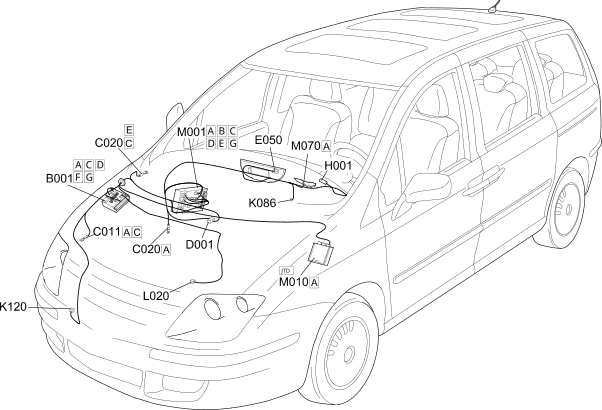

E6021 COMPRESSOR ENGAGEMENT COMPONENT LOCATION
- Path
- Electrical equipment > 1 ELECTRICAL FUNCTIONS > E60 CLIMATE CONTROL SYSTEM > E6021 COMPRESSOR ENGAGEMENT > E6021 COMPRESSOR ENGAGEMENT COMPONENT LOCATION
- Kind
- topic
- Applies to
- engines: 2.0 16V JTD, 2.2 16V JTD; all production periods; only with equipment: MY 2005
- Interactive page
- https://sloeber94.github.io/elrnDB-fUlss/en/#/179009401
Applies to: engines: 2.0 16V JTD, 2.2 16V JTD; all production periods; only with equipment: MY 2005

Component code | Description | Reference to the assembly |
|---|---|---|
BATTERY | - | |
ENGINE COMPARTMENT JUNCTION UNIT | ||
PASSENGER SIDE DASHBOARD EARTH | - | |
FRONT/DASHBOARD COUPLING | - | |
INSTRUMENT PANEL | ||
Ignition switch | ||
FROST SENSOR | ||
LINEAR SENSOR FOR FANS | - | |
AIR CONDITIONING COMPRESSOR ENGAGEMENT ELECTRO-MAGNET | ||
BODY COMPUTER | ||
ENGINE MANAGEMENT CONTROL UNIT | ||
CLIMATE CONTROL SYSTEM CONTROL UNIT | - |
Topics linked from this page (18)
- 1060G DIESEL INJECTION PRESSURE PUMP ELECTRONIC CONTROL
- 5040A CHECKING OPERATION OF AIR CONDITIONER (TEMPERATURE)
- 5040B SYSTEM SAFETY CHECK DEVICES
- 5505A MULTI-FUNCTION COMPONENTS
- 5520A IGNITION SWITCH
- 5560B ANALOGUE CONTROL PANEL
- A001 BATTERY
- B001 ENGINE COMPARTMENT JUNCTION UNIT
- C020 PASSENGER SIDE DASHBOARD EARTH
- D001 FRONT/DASHBOARD COUPLING
- E050 INSTRUMENT PANEL
- H001 Ignition switch
- K086 FROST SENSOR
- K120 LINEAR SENSOR FOR FANS
- L020 AIR CONDITIONING COMPRESSOR ENGAGEMENT ELECTRO-MAGNET
- M001 BODY COMPUTER
- M010 ENGINE MANAGEMENT CONTROL UNIT
- M070 CLIMATE CONTROL SYSTEM CONTROL UNIT